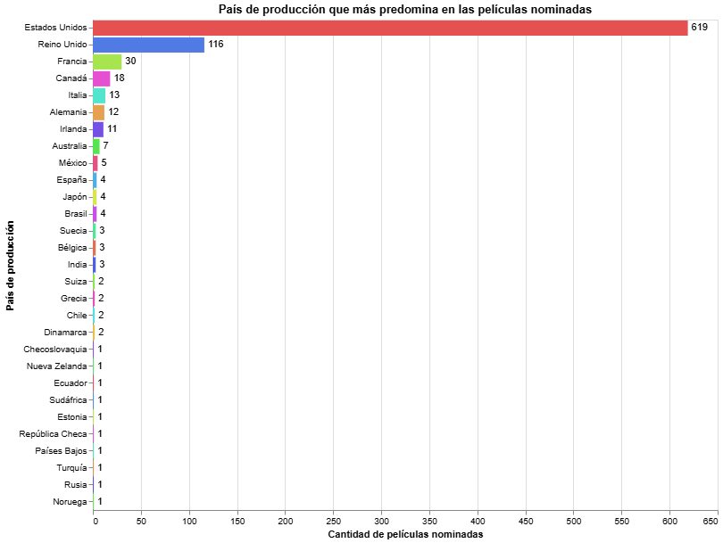

Si hay algo que queda claro al mirar a todas las películas nominadas al Oscar, es quién manda en la cancha. De las 870 nominadas a lo largo de la historia, 619 tienen a Estados Unidos como país principal de producción. Es decir, más de 7 de cada 10. Muy atrás aparecen Reino Unido con 116 y Francia con 30.

Después del podio vienen Canadá (18), Italia (13), Alemania (12) e Irlanda (11). Y de ahí para abajo, un montón de países con apenas una o dos películas, como Chile (2) o Ecuador (1).
Pero ese gráfico resume casi cien años de premios y no dice si siempre fue así. Además, cuenta el país principal de cada película, por eso una coproducción liderada por Estados Unidos suma para él. Para ver cómo cambió la historia hay que mirar el paso del tiempo, separando las películas hechas solo en Estados Unidos, las extranjeras y las coproducciones.
Durante los primeros años del Oscar, casi de forma segura si una película competía, era estadounidense. En 1929, en su creación el 100% de las nominadas lo era, principalmente porque este país creó la ceremonia.
Los premios Oscar surgieron como una forma en que tenía Hollywood para felicitarse entre ellos y reconocerse dentro del mismo círculo de nicho, por lo que claramente no estaba considerado el cine extranjero. Con el tiempo, en los 30 y 40 seguía sobre el 94%, y las extranjeras eran casi invitadas de piedra, con menos de un 6%.
En la década de 1960, hubo un evidente quiebre, la mayor cantidad de películas nominadas de esa época no eran de origen estadounidense. En una sola década las películas solo estadounidenses cayeron de 90,6% a 58,8%, y las extranjeras saltaron de 9,4% a 38,8%. Es el cambio más brusco de todo el gráfico.
Pero Hollywood no se rindió: en los 70 y 80 recuperó terreno y llegó a 73,9%, mientras las extranjeras bajaron a 26,1%. Un paso adelante y otro atrás.
Lo entretenido empieza en los 90. Desde ahí las dos líneas se van acercando década a década, hasta que en los 2000 casi se tocan: 46,9% de películas solo estadounidenses contra 45,8% de extranjeras. Un empate de manual. Nunca estuvo tan parejo el partido.
En medio de esa pelea apareció un tercer jugador: las coproducciones. Pasaron de no existir en los 30 a ser la mitad de las nominadas en los 2000. Cada vez más películas se hacen con financiamiento y equipos de varios países, y eso va borrando la línea entre "estadounidense" y "extranjera".
Ya que Estados Unidos comienza a entrelazarse con diversos países, ya sea porque la grabación de la película ocurre en otro como que la historia en la que está basada es de algún otro país.
En los 2010 las estadounidenses subieron a 50,5% y en los 2020 a 53%, mientras las extranjeras quedaron en 45,3% y 43,9%. Las coproducciones también bajaron, hasta 36,4%. Ojo que los 2020 todavía no terminan, así que ese dato puede cambiar.
Si miramos solo la distancia entre ambas, la historia se ve clara: más de 90 puntos en los 30, unos 48 en los 80, 19 en los 90, apenas 1 en los 2000, 5 en los 2010 y 9 en los 2020.
Entonces, ¿se alinearon? Sí, y harto. Pasamos de una competencia casi sin extranjeras a una donde pesan casi lo mismo que las estadounidenses. Pero tampoco hay que exagerar: el momento más parejo fue en los 2000 y desde entonces Hollywood volvió a sacar algo de ventaja.
El Oscar es hoy mucho más internacional que hace cien años, pero el total lo deja claro: con 619 de 870 nominadas, Estados Unidos sigue siendo el dueño de casa y todavía falta para equiparar la cancha.